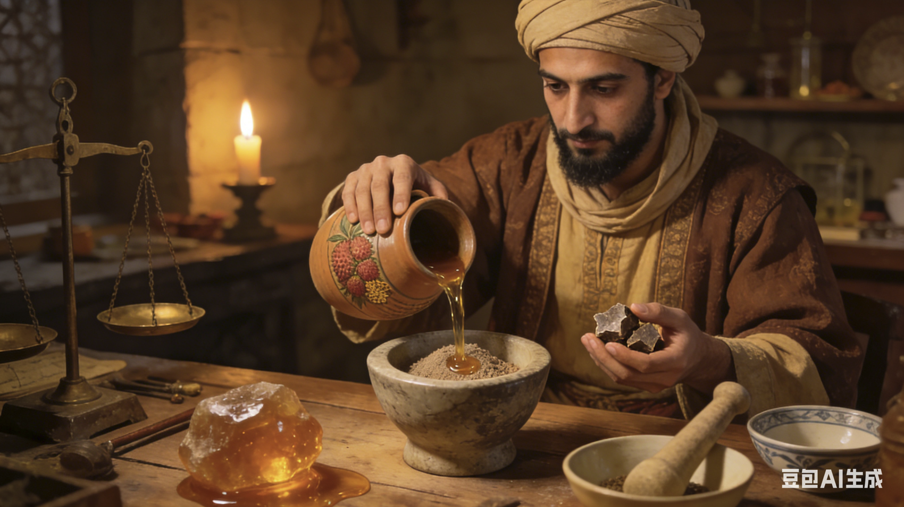
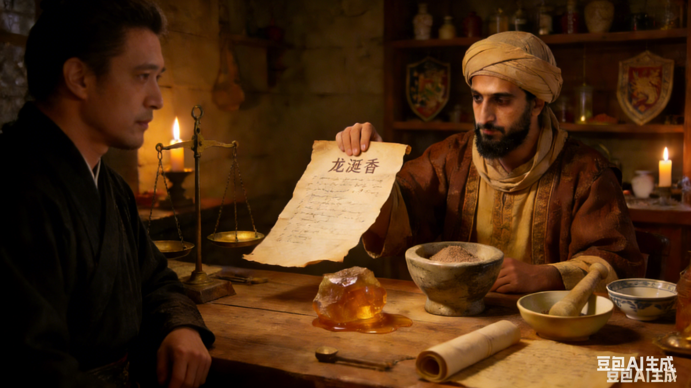
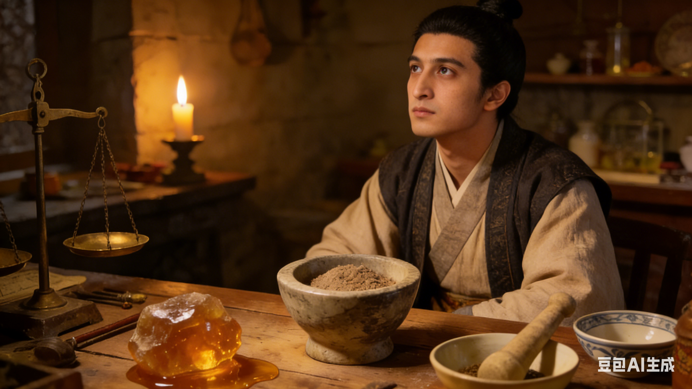
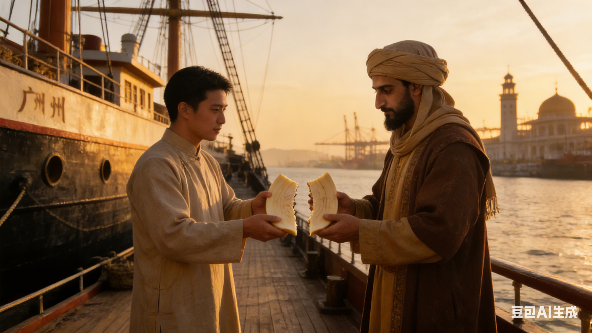
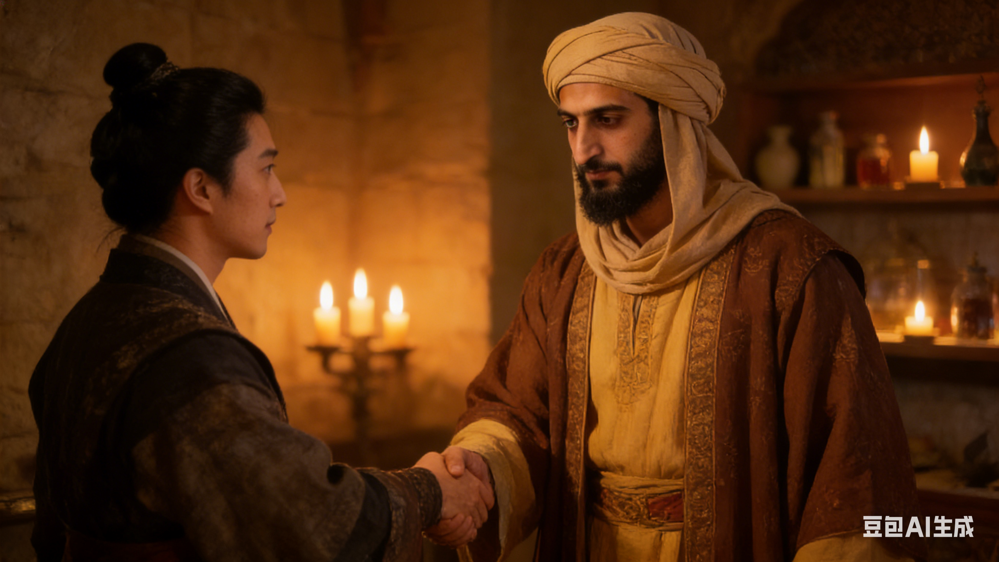

1: 元初，阿拉伯香料师阿卜杜拉研究龙涎香的时候，意外发现加入微量岭南荔枝蜜可以延长香气。

2:他将配方赠与周氏（中国合伙人），约定子孙共享其利。
阿卜杜拉对周氏说： “这是我新的研究的龙涎香配方，你是我唯一的合伙人，现在我把它赠予你。我们的子孙共享其利。”

3:元初战乱，阿布杜拉家西迁回阿拉伯 ，阿卜杜拉对周氏说：“战争爆发了，我们得回到西方去了。”

4:周氏后人苦守秘方等待 。

5: 百年之后，一艘船返回广州，船员呈上半块裂开的象牙牌，与周氏的半块象牙排完全吻合。周氏后人对阿卜杜拉后人说：“你...你是阿卜杜拉的后人？”

6: 周氏和阿卜杜拉后人重启香料合作。正是因为丝绸之路连通着东西方龙涎香才得以传承。